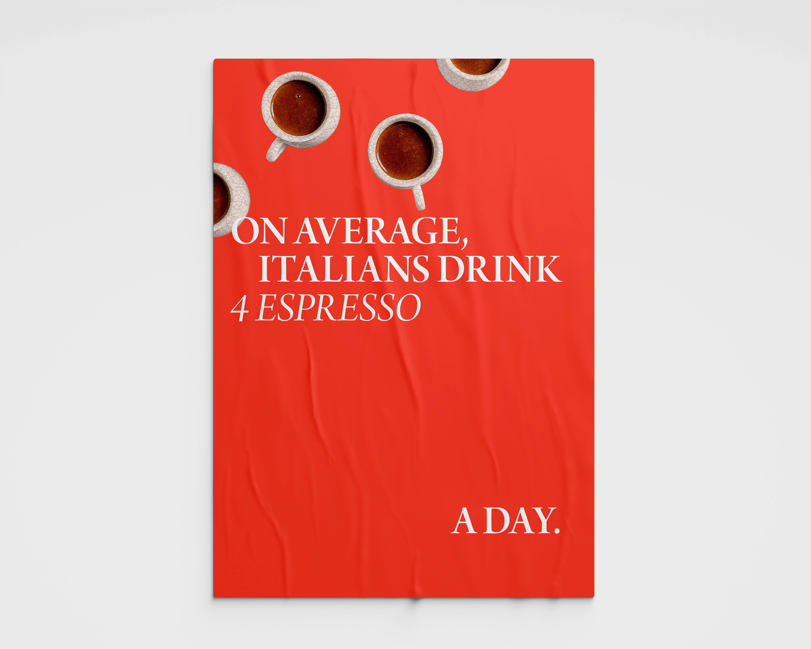
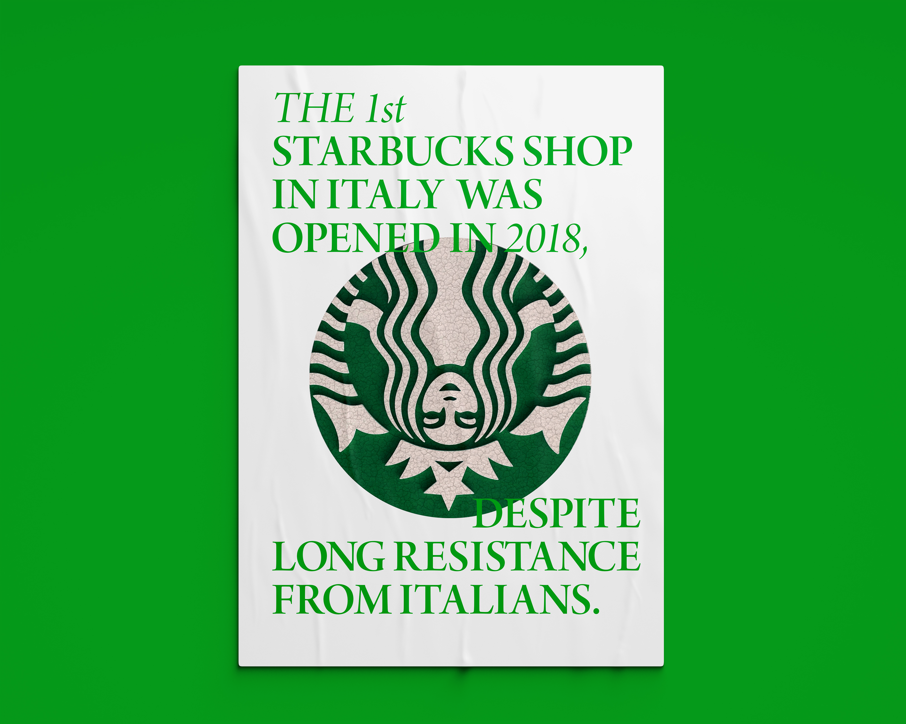
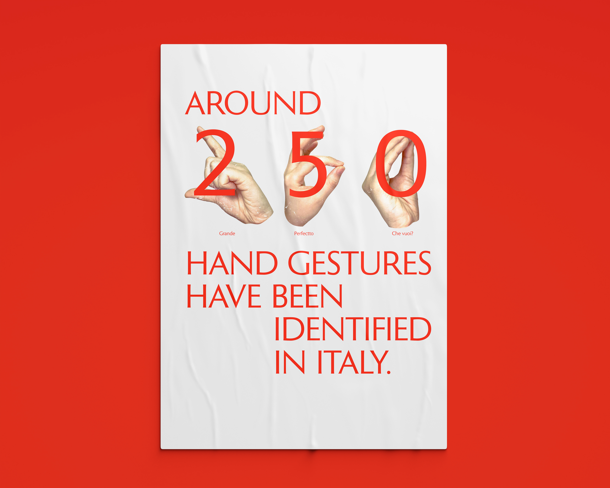
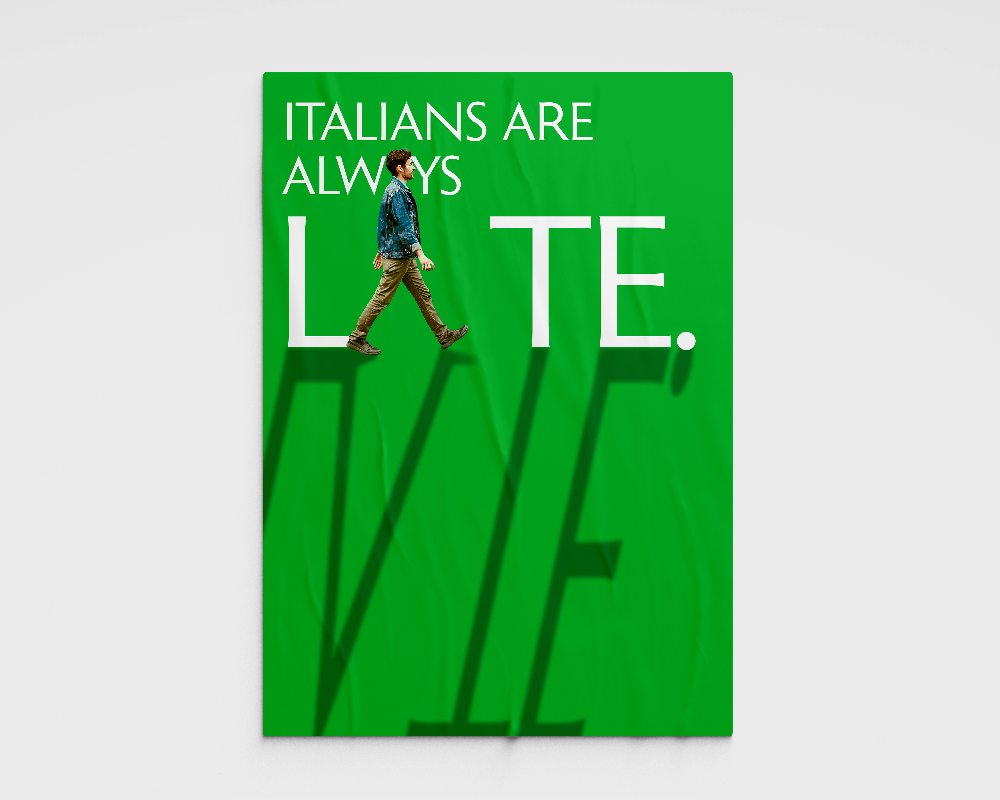
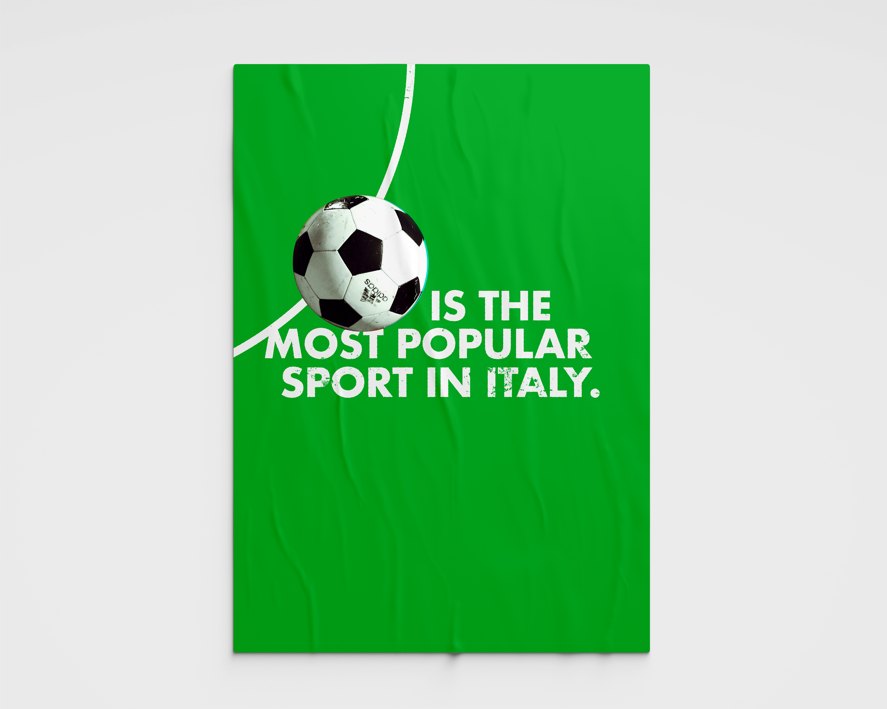
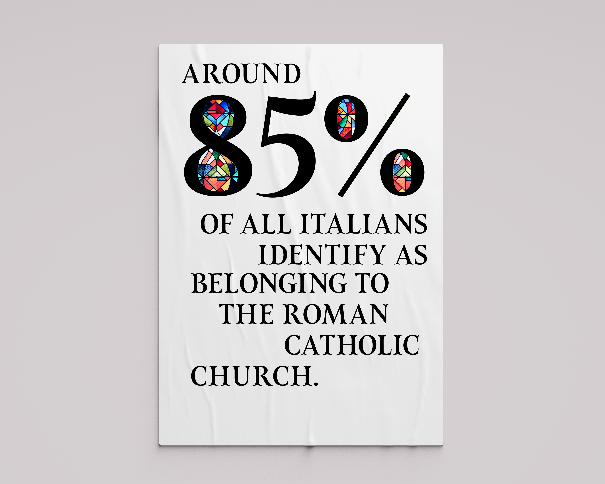

Infographics / Data Visualisation
A series of infographic posters that introduce Italian lifestyle in a simple and accurate way.

By looking at some facts and data, viewers can get the idea of what Italians are really like — after all, numbers don’t lie.




To reach the desired outcome, I experiment with different techniques. For example, I shape pepperoni slices into the word ‘PEPPERONI’.

